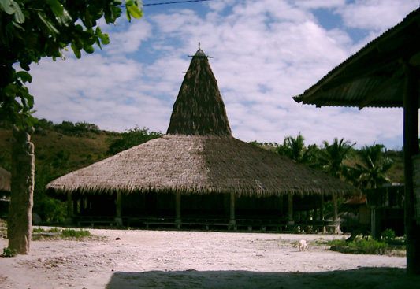

Indonesia Trav-E-Logs©
| Sumba
sent 10 September |
|
| back: Bali | Dr. Antoni on the KM Awu |
================================= Here is a typical question a backpacker encounters. I’m on the island of Sumba, Indonesia, and can’t find anyone who speaks English. The problem is, some folks say the only day travel by sea to the island of Flores is possible is in two weeks on a Pelni ship. My guide book (dated October, 2001) says there are also ferries on Wednesdays and Saturdays (with the same destination). Finally, my hotel staff says that ferries to Flores only run on Fridays. Today, Wednesday, I saw a ferry depart at 4 PM, and was told at the doc it goes to Flores. So, when should I check out of my hotel and hire a bemo to take me to the port? =================================
July 29 - Aug 1, 2003
After walking the one kilometer to the Pelni dock in Benoa, Pelni’s Awu is boarded without incident. Finding no other backpackers on a quick check of all six decks prompts me to attempt an upgrade from economy to second class. My Ekonomi ticket was 163,000 Rp, but noticed the 2nd. Klas fare was over 400,000 Rp -- pretty steep for the meager additional benefits. When someone comes out of the crew hallway, he is asked where to upgrade. The young gentleman in civilian clothes seems to understand some English, and asks me "1st or 2nd Klas?" Answering second class, he unlocks the door to a very clean room, and asks if this is okay. It is his private room. He indicates I can either sleep on the bed or on the sofa, my meals would be delivered to this room, and free use of the table and power outlet is included. Just 150,000 Rp. more to share this luxury. I asked him what his job is, and he says “Ship’s Doctor.”
Dr. Antoni is 28 years old, Muslim, and has been on board for 3 months. He says he is not very computer literate, and is from a town on Sulawesi near Makasar where he proudly attended university. The couch was comfortable, the four nearly identical meals just fine. With all the talking we did, not much was done on the laptop. I did, however, spend time learning my new camera. On one walk around the ship, met a couple from Bali that have just opened a small Balinese restaurant (Warung Bali) in Ende. They invite me to eat there when I visit Ende next week. The voyage was very pleasant, arriving in Waingapu, Sumba an hour later than the published schedule.
 The island of Sumba is almost as far south as you can get in Indonesia, at 10 degrees south latitude. Its climate is more like an Australian desert than the humid, tropical image we have of Indonesia. Most of the hills are brown and barren, with greens mostly confined to the valleys. Sandalwood trees are a thing of the past. Primary crops seem to be bananas, peanuts, and corn to feed the horses, still an important export. The dry air means the skies are deep blue by day, and ablaze with stars at night. Several walks are taken at night from the Hotel Kaliuda just to view the heavens. Rotating power outages are more common here than in California, so the darkened neighborhoods makes stargazing even more pleasant. I’m also lucky in another respect -- the new moon doesn’t interfere with my stargazing.
More Sumba observations: A blonde Indonesian. Quite a few ethnic Chinese. Boom boxes in the becaks (those tricycles with carriages). Many claim roots in Surabaya, but unlike that city on Java, Sumba feels safe and relaxed.
Haven’t seen many birds in just over 100 days on the trip. For sure, the farther south traveled, the more seen, but northern Vietnam, Cambodia, and Laos were almost devoid of my avian friends. Can you believe I’ve seen only one kingfisher on the trip, and that was in the Mekong Delta? Saw a few colorful birds in Penang, but was unable to identify them. Did see a flock of about 50 white-colored egrets flying overhead at dusk in Bali.
Judging by the disparity in prices listed in my "new", 2003 guidebook, the authors have not been here in ten years. The “hotel” to where the minivan driver delivered me, changed to a restaurant many years ago. So at 9 PM, had to start looking for a place to stay, ended up hiking over 2 km inland where all the lodging is now located.
Sumba is known for stone tombs, traditional houses, ikat, and horses. In the three days spent on the island, the port of Waingapu, and villages of Prailiu, Melolo and Rende are visited. Stone ancestor tombs are surprisingly located in the very center of each village. To visit your neighbor, you may have to walk around the tombs. The photo above shows a row of tombs, with the roofs of three traditional houses in the background. Note the structures in the far-left background have rusty “modern" tin roofs.
In Melolo a small piece of ikat is purchased – probably use it to cover a small chest of drawers at home. Met some guys at a teahouse while waiting for the return bus. Doesn't take long for the age question to come up. Franssius Be and I turn out to be born in the same year. Folks in Southeast Asia just can't believe someone my age would be backpacking overseas.
On Friday, pack up and head towards the port, stopping at the post office where the guidebook says Internet is available. Closed. Nothing. Maybe in Ende. Continuing to the ferry terminal, the ticket counter is open and selling passage for an overnight ferry to Ende, leaving late this afternoon. Even more surprising is meeting Dirk, the first westerner seen since Bali, and he also purchases a ticket for Ende. (That ferry which left on Wednesday was bound for Timor, not Ende.)
Enjoy!
Bill
------------------------------
Email me at the juno.com address "dancer2SEAsia"
"Travel is Fatal to Bigotry, Prejudice, and Narrow-minded ness" .... attributed to Mark Twain
| next: Flores |
| back: Bali |